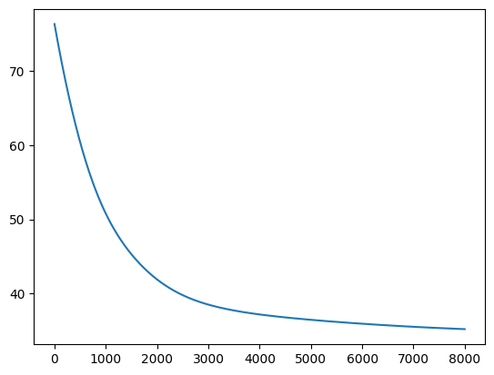

üå¶Ô∏è
⛈️ Napat Dollapavijit ⛈️
The data used in this project was scraped from the Bangkok website
contains rainfall measurements for 311,211 rows
from 02/01/2564 08:20 to 18/02/2566 16:50
| District | Number of Rows |
|---|---|
| หนองจอก | 16679 |
| มีนบุรี | 12076 |
| คลองเตย | 11711 |
| บางซื่อ | 11186 |
| บางแค | 9942 |
| ทวีวัฒนา | 9520 |
| ราชเทวี | 9177 |
| พระโขนง | 9156 |
| บางขุนเทียน | 8921 |
| จตุจักร | 8773 |
| ภาษีเจริญ | 8770 |
| สายไหม | 8748 |
| บางนา | 8330 |
| วังทองหลาง | 8254 |
| พระนคร | 8073 |
| ตลิ่งชัน | 7739 |
| ประเวศ | 7678 |
| ยานนาวา | 7603 |
| จอมทอง | 7227 |
| ธนบุรี | 7125 |
| หลักสี่ | 6397 |
| สะพานสูง | 5959 |
| วัฒนา | 5863 |
| ดุสิต | 5707 |
| ห้วยขวาง | 5594 |
| ปทุมวัน | 5525 |
| บางกอกน้อย | 5453 |
| คลองสาน | 5390 |
| สาทร | 5324 |
| บางรัก | 5249 |
| บางคอแหลม | 5196 |
| ราษฏร์บูรณะ | 5076 |
| คลองสามวา | 4990 |
| ทุ่งครุ | 4766 |
| ลาดกระบัง | 4502 |
| สวนหลวง | 3647 |
| บางเขน | 3475 |
| บางกอกใหญ่ | 3449 |
| หนองแขม | 3276 |
| พญาไท | 3245 |
| ดินแดง | 3048 |
| คันนายาว | 2982 |
| ป้อมปราบฯ | 2922 |
| บางบอน | 2860 |
| บึงกุ่ม | 2853 |
| บางกะปิ | 2790 |
| สัมพันธวงศ์ | 2775 |
| บางพลัด | 2731 |
| ดอนเมือง | 2498 |
| ลาดพร้าว | 981 |
df = pd.concat([pd.read_csv(
os.path.join('data', p)
) for p in os.listdir('data')]) # .sample(2_000)
def replace_year(string):
y = string[6:10]
y = str(int(y) - 543)
return string[:6] + y + string[10:]
df.loc[:, 'time'] = pd.to_datetime(
df['วัน-เวลา'].apply(replace_year), format='%d/%m/%Y %H:%M')
df = df.sort_values('time')
grouped = df.groupby(
['เขต', pd.Grouper(key="time", freq='30min')]
)['ฝน 30 นาที'].max()
prev_time_len = 5
chunks = []
for i in trange(len(grouped.index)-prev_time_len, desc='Building data chunks'):
if not grouped[i:i+prev_time_len].isna().any():
indices = grouped[i:i+prev_time_len].index
chunks.append(
grouped[indices].values
)
print('Total data points is', len(chunks))
data = np.array(chunks)
X = data[:, :prev_time_len-1]
y = data[:, prev_time_len-1]
X_train, X_test, y_train, y_test = train_test_split(
X, y, test_size=0.2)
my_reg = MyLinearRegression(0.0003)\
.fit(X_train, y_train, iteration=8000)
print('Mean absolute error', mean_absolute_error(my_reg.predict(X_test), y_test))
train_test_split function
def train_test_split(X, y, test_size=0.1):
hist, bin_adges = np.histogram(y, bins='auto')
train_mask = []
test_mask = []
for i, edge in enumerate(bin_adges):
if i == 0:
continue
indices, = np.where((bin_adges[i - 1] <= y) & (y < edge))
num_test = int(len(indices) * test_size)
np.random.shuffle(indices)
test_indices = indices[:num_test]
train_indices = indices[num_test:]
train_mask += list(train_indices)
test_mask += list(test_indices)
X_train = X[train_mask]
X_test = X[test_mask]
y_train = y[train_mask]
y_test = y[test_mask]
return X_train, X_test, y_train, y_test
class MyLinearRegression:
# Class constructor
def __init__(self, alpha=1):
self.alpha = alpha
self.w = None
self.w_dim = None
self.losses = None
def fit(self, x: np.ndarray, y: np.ndarray, iteration=1500):
"""
Fit the linear regression model to the given data.
Parameters:
x (numpy.ndarray): The input features.
y (numpy.ndarray): The target values.
iteration (int): The number of iterations for training. Default is 1500.
Returns:
self (MyLinearRegression): The fitted linear regression model.
"""
# Set the target values
self.y = y
# Determine the dimension of the weight vector
self.w_dim = x.shape[-1] + 1 # plus one for bias
# Initialize the weight vector with zeros
self.w = np.zeros(self.w_dim)
# Append a column of ones to the input features for the bias term
self.x = np.append(x, np.ones((x.shape[0], 1)), axis=1)
# Initialize an array to store the losses for each iteration
self.losses = np.ones(iteration)
# Perform gradient descent for the specified number of iterations
for i in range(iteration):
self.losses[i] = self._make_one_update()
return self
def _make_one_update(self):
"""
Perform one update step of gradient descent.
Returns:
float: The loss after the update step.
"""
# Make a copy of the current weight vector
w_current = self.w.copy()
# Compute the step size using the learning rate and the gradient
step = -1 * self.alpha * self._compute_gradient(w_current)
# Update the weight vector
w_update = w_current + step
# Calculate the loss after the update
update_loss = self.sq_loss(w_update)
# Update the weight vector with the new values
self.w = w_update
# Return the loss after the update
return update_loss
def _compute_gradient(self, w_current: np.ndarray):
"""
Compute the gradient of the loss function with respect to the weight vector.
Parameters:
w_current (numpy.ndarray): The current weight vector.
Returns:
numpy.ndarray: The computed gradient.
"""
grad_v = np.zeros(self.w_dim)
predictions = self.x @ w_current
errors = self.y - predictions
grad_v[:-1] = -2 / self.x.shape[0] * np.sum(self.x[:, :-1] * errors[:, None], axis=0)
grad_v[-1] = -2 / self.x.shape[0] * np.sum(predictions)
return grad_v / math.sqrt(np.inner(grad_v, grad_v))
def sq_loss(self, w: np.ndarray) -> float:
"""
Calculates the squared loss for linear regression.
Parameters:
w (numpy.ndarray): the weight vector
Returns:
float: the mean squared loss
"""
return np.mean((self.y - self.x @ w)**2)
def predict(self, X: np.ndarray):
"""
Predicts using linear regression model
Parameters:
X (numpy.ndarray): features
Returns:
numpy.ndarray: predicted values
"""
x = np.append(X.copy(), np.ones((X.shape[0], 1)), axis=1)
return x @ self.w
Training Loss (Mean squared error)
Mean absolute error 3.473
Improvements